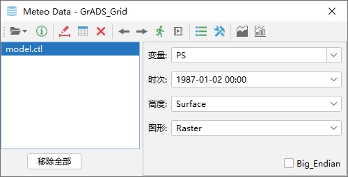
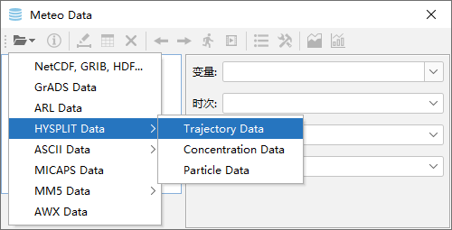
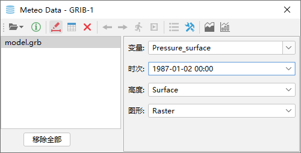
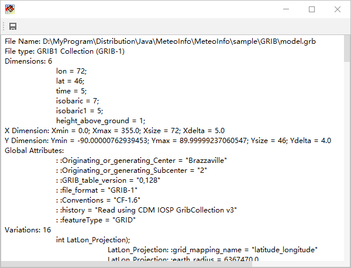
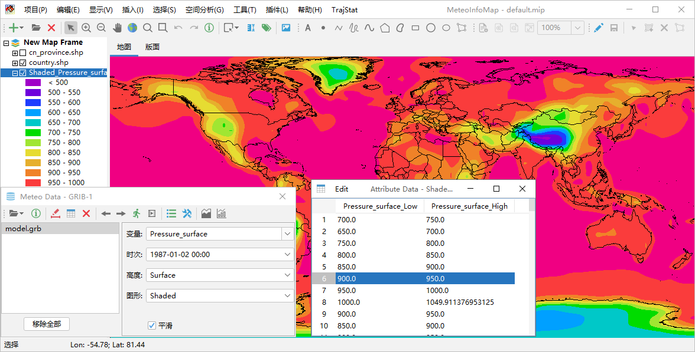
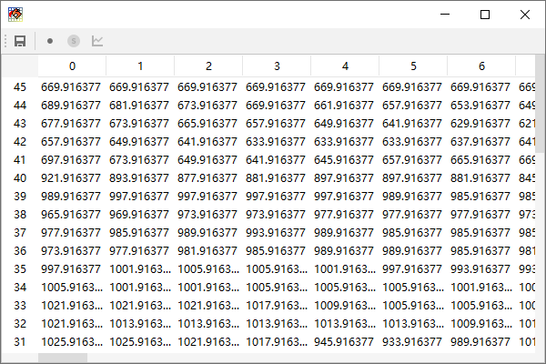

气象数据对话框¶
气象数据对话框界面¶
MeteoInfoMap通过气象数据（Meteo Data）对话框进行气象数据的分析绘图，该对话框如果被关闭，可以通过点击MeteoInfoMap主工具 栏上的“打开数据文件”按钮打开。对话框中包括了打开各类气象数据文件、查看数据信息、生成气象数据GIS图层、动画、图例设置、剖面图、 一维图等功能。
打开数据文件¶
气象数据对话框工具栏第一个按钮用于打开数据文件，该按钮有一个下拉菜单，可以通过点击下拉菜单中的子菜单打开某一类或几类气象数 据文件。

NetCDF, GRIB, HDF…：这个子菜单能够打开的数据格式最多，包括NetCDF、GRIB、HDF等格式数据文件；
GrADS Data：可以打开GrADS的二进制格式数据文件，打开时需要选择Control文件；
ARL Data：ARL格式是HYSPLIT模式所需的特定气象数据文件格式；
HYSPLIT Data：包含了三个子菜单，分别用来打开HYSPLIT模式输出的气团轨迹数据文件（Trajectory Data）、浓度数据文件（Concentration Data）和轨迹点分布数据文件（Particle Data）；
ASCII Data：包含5个子菜单，用来打开各类文本数据文件，包括：包含经纬度的站点数据文件（Lon/Lat Station Data）、SYNOP全球地面气象站点数据文件（SYNOP Data）、METAR航空例行气象报文数据文件（METAR Data）、Esri文本格点数据文件（Esri ASCII Grid Data）、Surfer文本格点数据文件（Surfer ASCII Grid Data）；
MICAPS Data：用于打开中国气象局的MICAPS数据文件，目前支持的有MICAPS第1、2、3、4、7、11、13、120、131类数据文件；
MM5 Data：包含两个子菜单，分别用来打开MM5模式的输出数据文件（MM5 Output Data）和MM5模式的中间数据文件（MM5 Intermediate Data）；
AWX Data：用于打开中国气象局的卫星遥感AWX数据文件。
显示数据文件¶
MeteoInfo软件“MeteoInfo -> sample”目录中有一些示例气象数据文件，例如打开一个GRIB格式气象数据文件model.grb（位于 MeteoInfo -> sample -> GRIB目录中），软件会自动读取数据文件中的各类信息，变量、时次、高度信息会显示在Meteo Data 对话框右侧供用户选择。
点击对话框工具栏中“显示数据信息”按钮可以将打开的数据文件信息显示出来。主要包括数据的维（Dimensions）、全局属性（Global Attribute）、变量（Variables）。每个变量可能有不同的维设置，还会有属性数据来描述变量的特征。
绘制数据图形¶
在Meteo Data对话框中选择要绘制的数据变量、时次、高度和图形类型，然后点击工具栏中的“绘制数据图形”按钮，软件会根据设置生成 一个图层并加入图层控制栏中，达到图形化显示数据的目的，相关数据会加入图层的属性数据表中。
数据被绘制后点击工具栏中的“显示数据”按钮可以将数据的值显示在一个表格中。
数据图层创建后只是在内存中，软件退出后图层就不存在了。如果要保存图层，可以在图层控制区选中图层名，点击鼠标右键在弹出菜单中 选择“保存图层”菜单将图层数据保存在硬盘中。从数据被创建的图层可以通过点击工具栏中的“删除数据图形”按钮从图层控制栏中删除， 该按钮只会删除最后创建的图层，如果有多个数据创建图层，可以在MeteoInfoMap主界面工具栏中点击“删除数据图层”按钮将所有的数 据图层全部删除。
如果数据变量有多个时次，可以通过Meteo Data对话框工具栏中的“上一时次”和“下一时次”按钮来查看该变量不同时次的数据图层。点击 “动画”按钮可以让数据图层根据时次以动画的形式展现。“创建动画文件”按钮可以将地图区域图形按时次保存为一个gif动画文件。对于等 值线（Contour）和等值线填色图层（Shaded），要改变等值线分级和值的设置需要点击对话框工具栏中“图例设置”按钮，在弹出的图例 设置对话框中修改，这样才能根据设置重新追踪等值线。“设置”按钮主要是风场变量等一些设置。工具栏中还有“截面图”和“一维图”按钮来 绘制数据的截面图和一维图。